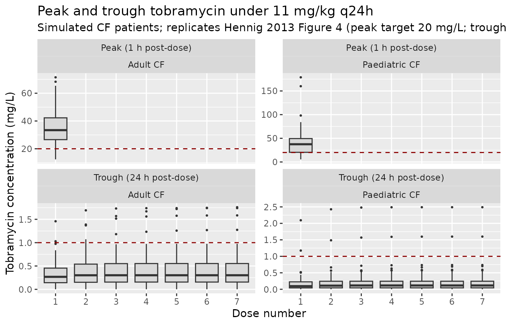
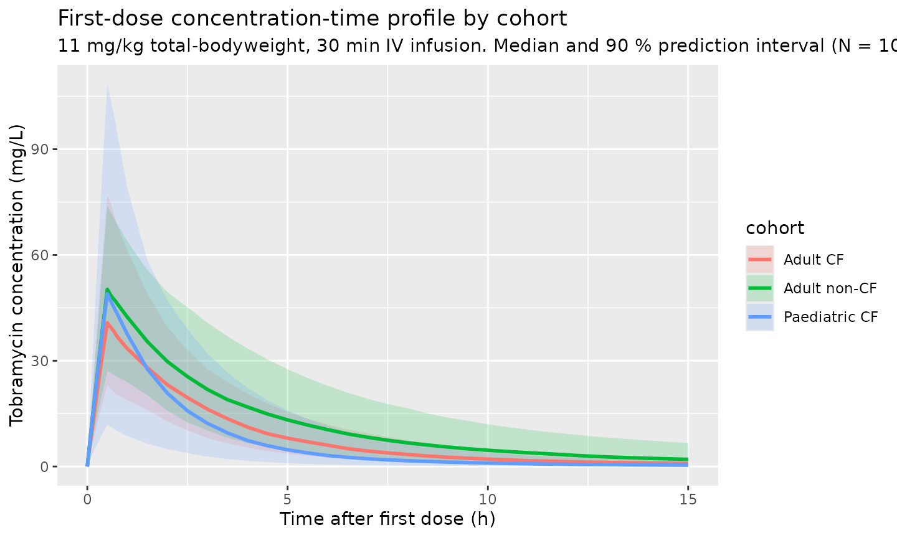
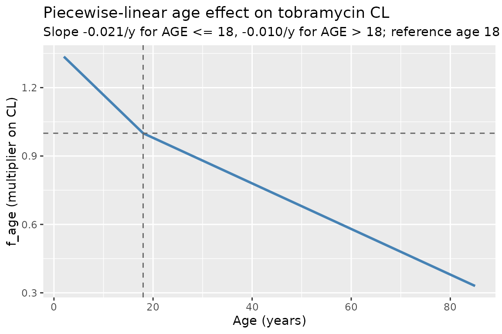
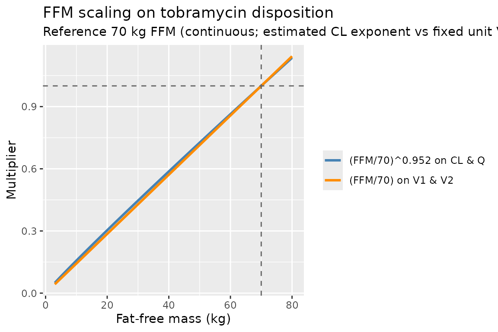

Model and source
- Citation: Hennig S, Standing JF, Staatz CE, Thomson AH. Population pharmacokinetics of tobramycin in patients with and without cystic fibrosis. Clin Pharmacokinet. 2013;52(4):289-301. doi:[10.1007/s40262-013-0036-y](https://doi.org/10.1007/s40262-013-0036-y).
- Description: Two-compartment intravenous population PK model for tobramycin in adults and children with and without cystic fibrosis, with fat-free-mass allometric scaling on CL and Q (estimated exponent), linear FFM scaling on V1 and V2, sex-specific reference CL and V1, a piecewise-linear age effect on CL, and a power effect of the SCR_mean / SCR ratio on CL. Cystic-fibrosis status was tested but not retained as an independent covariate.
- Modality: Aminoglycoside antibiotic, IV bolus or short infusion.
Population
The combined dataset pooled 5,605 tobramycin concentration-time measurements from 732 patients across eight centres (Hennig 2013 Methods 2.1, Table 1):
- 524 paediatric patients (351 with cystic fibrosis, 173 without).
- 208 adults (114 with CF, 94 without).
- Age 0.01-85 years (paediatric median 7.7 years; adult median 31.7 years).
- Body weight 3.3-120 kg (paediatric median 25.5 kg; adult median 58.0 kg).
- Fat-free mass 3.0-65.1 kg.
- Sex distribution roughly balanced (paediatric 53 % female of those with sex recorded; adult 48 % female).
- Daily doses 0.9-28.8 mg/kg, given once-, twice-, or three-times daily by IV bolus injection (97 patients) or short IV infusion (635 patients).
- The non-CF children were mainly oncology patients with febrile neutropenia receiving once-daily tobramycin in a dose-escalation study. The non-CF adults came from a heterogeneous adult cohort (Hennig 2013 Results 3.1).
The same metadata is available programmatically via
readModelDb("Hennig_2013_tobra")$population.
Source trace
The per-parameter origin is recorded as an in-file comment next to
each ini() entry in
inst/modeldb/specificDrugs/Hennig_2013_tobra.R. The table
below collects them in one place for review.
| Equation / parameter (model name) | Value (final model) | Source location |
|---|---|---|
lcl (CL_female, L/h/70 kg) |
log(8.1) | Hennig 2013 Table 2, theta_CL,female |
e_male_cl (log male/female ratio on CL) |
log(9.4 / 8.1) = 0.1490 | Hennig 2013 Table 2, theta_CL,male = 9.4 |
lvc (V1_female, L/70 kg) |
log(20.1) | Hennig 2013 Table 2, theta_V1,female |
e_male_vc (log male/female ratio on V1) |
log(25.1 / 20.1) = 0.2222 | Hennig 2013 Table 2, theta_V1,male = 25.1 |
lq (Q, L/h/70 kg) |
log(1.5) | Hennig 2013 Table 2, theta_Q2 |
lvp (V2, L/70 kg) |
log(10.0) | Hennig 2013 Table 2, theta_V2 |
e_ffm_cl_q (FFM allometric exponent on CL/Q) |
0.952 | Hennig 2013 Table 2, theta_FFM (Eqs. 6 and 8) |
| FFM exponent on V1, V2 | 1 (fixed, linear) | Hennig 2013 Table 2 footnote, Eqs. 7 and 9 |
e_age_le18 (slope on f_age, AGE <= 18 y) |
-0.021 per year | Hennig 2013 Table 2, theta_AGE (<18 years) |
e_age_gt18 (slope on f_age, AGE > 18 y) |
-0.010 per year | Hennig 2013 Table 2, theta_AGE (>18 years) |
e_scr_cl (power on (CREAT_REF / CREAT)) |
0.222 | Hennig 2013 Table 2, theta_SCR (Eq. 5) |
Block IIV etalcl + etalvc + etalq
|
log(CV^2 + 1) (CV 25.9, 15.2, 41.8 %); correlations 65.8 %, 71.1 %, 47.5 % | Hennig 2013 Table 2, BSV CV% and correlations |
etalvp |
log(0.585^2 + 1) = 0.294 | Hennig 2013 Table 2, BSV CV% on V2 (independent) |
propSd |
0.204 | Hennig 2013 Table 2, Prop RUV (final model) |
Equations: structural two-compartment IV micro-constant form
(d/dt(central) and d/dt(peripheral1)) with
covariate-driven typical-value parameters per Hennig 2013 Eqs. 5-9.
Reference covariates: female sex (SEXF = 1), 70 kg FFM, 18 years,
CREAT = CREAT_REF (so the renal-function factor f_scr
evaluates to 1).
The published equation
f_AGE = 1 + theta_AGE * (AGE - 18) is implemented here in
the equivalent piecewise-linear form
f_age = 1 + e_age_le18 * min(0, AGE - 18) + e_age_gt18 * max(0, AGE - 18),
which selects the correct sex-appropriate slope automatically. At the
breakpoint AGE = 18 years both branches evaluate to 1, so the function
is continuous.
Virtual cohort
Original observed concentration data are not publicly available. The simulations below use a virtual cohort whose covariate distributions approximate the published trial demographics (Hennig 2013 Table 1). Continuous covariates are drawn from log-normal / normal distributions clipped to the reported range; sex is drawn from the reported female proportion. Three cohorts are simulated to span the paper’s main strata: paediatric CF, adult CF, and adult non-CF.
set.seed(2013)
# Helper: build one cohort as a self-contained event table with disjoint
# IDs (id_offset), 11 mg/kg once-daily IV infusion over 30 minutes for
# 7 days (the paper's optimal once-daily regimen, Hennig 2013 Section
# 3.4). Concentration sampling: dense in the first dosing interval,
# trough at every subsequent dose.
make_cohort <- function(label, n, ffm_log_mean, ffm_log_sd,
age_mean, age_sd, age_min, age_max,
wt_log_mean, wt_log_sd, wt_min, wt_max,
female_pct, scr_mean, scr_sd,
scr_ref_mean, scr_ref_sd,
id_offset = 0L) {
cohort <- tibble(
id = id_offset + seq_len(n),
cohort = label,
SEXF = rbinom(n, 1, female_pct / 100),
FFM = round(pmin(pmax(rlnorm(n, ffm_log_mean, ffm_log_sd),
1.5), 80), 2),
WT = round(pmin(pmax(rlnorm(n, wt_log_mean, wt_log_sd),
wt_min), wt_max), 2),
AGE = round(pmin(pmax(rnorm(n, age_mean, age_sd),
age_min), age_max), 2),
CREAT = round(pmin(pmax(rnorm(n, scr_mean, scr_sd), 25), 250), 2),
CREAT_REF = round(pmin(pmax(rnorm(n, scr_ref_mean, scr_ref_sd),
25), 250), 2)
)
# Apply Hennig 2013's measured-SCR floor of 60 umol/L for adults
# (paper Methods "Covariate Models"). Children are exempted because
# the floor was applied in the context of paediatric Schwartz CLcr
# estimation only.
cohort <- cohort |>
mutate(CREAT = ifelse(AGE >= 18 & CREAT < 60, 60, CREAT))
amt_per_subj <- round(11 * cohort$WT) # 11 mg/kg of total bodyweight
dose_times <- seq(0, by = 24, length.out = 7) # 7 days, q24h
obs_grid <- sort(unique(c(dose_times,
seq(0, 0.75, by = 0.05), # peak window
seq(1, 24, by = 0.5),
seq(48, 168, by = 24)))) # daily troughs
d_dose <- cohort |>
tidyr::crossing(time = dose_times) |>
mutate(amt = rep(amt_per_subj, each = length(dose_times)),
evid = 1, cmt = "central", dur = 0.5,
dv = NA_real_)
d_obs <- cohort |>
tidyr::crossing(time = obs_grid) |>
mutate(amt = NA_real_, evid = 0, cmt = "central", dur = NA_real_,
dv = NA_real_)
dplyr::bind_rows(d_dose, d_obs) |>
dplyr::arrange(id, time, dplyr::desc(evid)) |>
as.data.frame()
}
# Paediatric CF: median age 11.1 y, median weight 31.8 kg, median FFM
# ~25 kg (interpolated from Table 1 paediatric / paediatric-CF rows)
ev_ped <- make_cohort(
"Paediatric CF", n = 100,
ffm_log_mean = log(20), ffm_log_sd = 0.45,
age_mean = 9, age_sd = 4, age_min = 1, age_max = 17.9,
wt_log_mean = log(28), wt_log_sd = 0.45, wt_min = 6, wt_max = 70,
female_pct = 52, scr_mean = 45, scr_sd = 12,
scr_ref_mean = 45, scr_ref_sd = 5,
id_offset = 0L
)
# Adult CF: median age 24 y, median weight 54 kg, median FFM 41 kg
ev_acf <- make_cohort(
"Adult CF", n = 100,
ffm_log_mean = log(40), ffm_log_sd = 0.18,
age_mean = 28, age_sd = 9, age_min = 18, age_max = 60,
wt_log_mean = log(55), wt_log_sd = 0.20, wt_min = 35, wt_max = 95,
female_pct = 49, scr_mean = 70, scr_sd = 18,
scr_ref_mean = 70, scr_ref_sd = 8,
id_offset = 200L
)
# Adult non-CF: median age 52 y, median weight 67 kg, median FFM 46 kg
ev_anc <- make_cohort(
"Adult non-CF", n = 100,
ffm_log_mean = log(46), ffm_log_sd = 0.20,
age_mean = 52, age_sd = 17, age_min = 20, age_max = 85,
wt_log_mean = log(67), wt_log_sd = 0.22, wt_min = 42, wt_max = 120,
female_pct = 46, scr_mean = 75, scr_sd = 25,
scr_ref_mean = 75, scr_ref_sd = 10,
id_offset = 400L
)
events <- dplyr::bind_rows(ev_ped, ev_acf, ev_anc)
stopifnot(!anyDuplicated(unique(events[, c("id", "time", "evid")])))Simulation
mod <- readModelDb("Hennig_2013_tobra")
sim <- rxode2::rxSolve(
mod,
events = events,
keep = c("cohort", "FFM", "AGE", "WT", "SEXF", "CREAT", "CREAT_REF"),
returnType = "data.frame"
)
#> ℹ parameter labels from comments will be replaced by 'label()'Replicate Figure 4: peak and trough distributions at 11 mg/kg q24h
Hennig 2013 Figure 4 shows box-plots of peak (1 h post-dose; 30 min after the end of a 30 min infusion) and trough (24 h post-dose) tobramycin concentrations in the simulated CF patients dosed with the optimal regimen of 11 mg/kg total-bodyweight once daily. Target peak is 20 mg/L (corresponding to the 1 h peak / MIC ratio of 20 / 2 used in the utility-function dose optimization) and the maximum trough is 1 mg/L.
peak_window <- 1
trough_grid <- seq(24, 168, by = 24)
dose_times <- seq(0, by = 24, length.out = 7)
peak_times <- dose_times + peak_window
trough_times <- dose_times + 24
peaks <- sim |>
dplyr::filter(time %in% peak_times) |>
dplyr::mutate(dose_index = match(time, peak_times),
metric = "Peak (1 h post-dose)")
troughs <- sim |>
dplyr::filter(time %in% trough_times) |>
dplyr::mutate(dose_index = match(time, trough_times),
metric = "Trough (24 h post-dose)")
ptdat <- dplyr::bind_rows(peaks, troughs) |>
dplyr::filter(cohort %in% c("Paediatric CF", "Adult CF"))
ggplot(ptdat, aes(factor(dose_index), Cc)) +
geom_boxplot(outlier.size = 0.5, fill = "grey85") +
geom_hline(data = tibble(metric = "Peak (1 h post-dose)", y = 20),
aes(yintercept = y), linetype = "dashed", colour = "darkred") +
geom_hline(data = tibble(metric = "Trough (24 h post-dose)", y = 1),
aes(yintercept = y), linetype = "dashed", colour = "darkred") +
facet_wrap(metric ~ cohort, scales = "free_y", ncol = 2) +
labs(x = "Dose number",
y = "Tobramycin concentration (mg/L)",
title = "Peak and trough tobramycin under 11 mg/kg q24h",
subtitle = "Simulated CF patients; replicates Hennig 2013 Figure 4 (peak target 20 mg/L; trough <= 1 mg/L)")
Concentration-time profile by cohort
A descriptive view of the first dosing interval for each cohort, on the same axes as Hennig 2013 Figure 1 (raw data) and Figure 3 (pcVPC).
sim_first <- sim |>
dplyr::filter(time <= 15) |>
dplyr::group_by(cohort, time) |>
dplyr::summarise(
median = stats::median(Cc, na.rm = TRUE),
lo = stats::quantile(Cc, 0.05, na.rm = TRUE),
hi = stats::quantile(Cc, 0.95, na.rm = TRUE),
.groups = "drop"
)
ggplot(sim_first, aes(time, median, colour = cohort, fill = cohort)) +
geom_ribbon(aes(ymin = lo, ymax = hi), alpha = 0.18, colour = NA) +
geom_line(linewidth = 1) +
scale_y_continuous(limits = c(0, NA)) +
labs(x = "Time after first dose (h)",
y = "Tobramycin concentration (mg/L)",
title = "First-dose concentration-time profile by cohort",
subtitle = "11 mg/kg total-bodyweight, 30 min IV infusion. Median and 90 % prediction interval (N = 100 per cohort).")
Visualise the covariate model
The following typical-value sweeps illustrate the structural covariate effects in the packaged model.
age_grid <- c(seq(2, 18, by = 1), seq(20, 85, by = 5))
e_age_le18 <- -0.021
e_age_gt18 <- -0.010
f_age <- 1 + e_age_le18 * pmin(0, age_grid - 18) +
e_age_gt18 * pmax(0, age_grid - 18)
ggplot(tibble(AGE = age_grid, f_age = f_age),
aes(AGE, f_age)) +
geom_line(linewidth = 1, colour = "steelblue") +
geom_vline(xintercept = 18, linetype = "dashed", colour = "grey40") +
geom_hline(yintercept = 1, linetype = "dashed", colour = "grey40") +
labs(x = "Age (years)", y = "f_age (multiplier on CL)",
title = "Piecewise-linear age effect on tobramycin CL",
subtitle = "Slope -0.021/y for AGE <= 18, -0.010/y for AGE > 18; reference age 18 years")
ffm_grid <- seq(3, 80, by = 1)
e_ffm_cl_q <- 0.952
ggplot(tibble(FFM = ffm_grid,
f_cl = (ffm_grid / 70)^e_ffm_cl_q,
f_v1 = ffm_grid / 70) |>
tidyr::pivot_longer(c(f_cl, f_v1), names_to = "parameter",
values_to = "factor"),
aes(FFM, factor, colour = parameter)) +
geom_line(linewidth = 1) +
geom_vline(xintercept = 70, linetype = "dashed", colour = "grey40") +
geom_hline(yintercept = 1, linetype = "dashed", colour = "grey40") +
scale_colour_manual(values = c(f_cl = "steelblue", f_v1 = "darkorange"),
labels = c(f_cl = "(FFM/70)^0.952 on CL & Q",
f_v1 = "(FFM/70) on V1 & V2")) +
labs(x = "Fat-free mass (kg)", y = "Multiplier",
colour = NULL,
title = "FFM scaling on tobramycin disposition",
subtitle = "Reference 70 kg FFM (continuous; estimated CL exponent vs fixed unit V exponent)")
PKNCA validation
PKNCA is used to derive Cmax, Tmax, Cmin (24 h trough), and AUC0-tau on the first dosing interval for each cohort. The single-dose choice avoids the need for a steady-state assumption (tobramycin’s half-life is short, but accumulation depends on FFM/age/SCR). The treatment grouping variable is the cohort label.
sim_nca <- sim |>
dplyr::filter(time <= 24, !is.na(Cc)) |>
dplyr::select(id, cohort, time, Cc)
conc_obj <- PKNCA::PKNCAconc(sim_nca, Cc ~ time | cohort + id,
concu = "mg/L", timeu = "h")
dose_df <- sim |>
dplyr::filter(time == 0) |>
dplyr::group_by(id, cohort) |>
dplyr::summarise(amt = unique(WT)[1] * 11, .groups = "drop") |>
dplyr::mutate(time = 0)
dose_obj <- PKNCA::PKNCAdose(dose_df, amt ~ time | cohort + id,
doseu = "mg")
intervals <- data.frame(
start = 0,
end = 24,
cmax = TRUE,
tmax = TRUE,
cmin = TRUE,
auclast = TRUE,
cav = TRUE
)
nca_data <- PKNCA::PKNCAdata(conc_obj, dose_obj, intervals = intervals)
nca_res <- PKNCA::pk.nca(nca_data)
knitr::kable(
summary(nca_res),
caption = "Simulated single-dose NCA per cohort (11 mg/kg q24h, first dose)."
)| Interval Start | Interval End | cohort | N | AUClast (h*mg/L) | Cmax (mg/L) | Cmin (mg/L) | Tmax (h) | Cav (mg/L) |
|---|---|---|---|---|---|---|---|---|
| 0 | 24 | Adult CF | 100 | 132 [39.9] | 41.3 [36.7] | NC | 0.500 [0.500, 0.500] | 5.48 [39.9] |
| 0 | 24 | Adult non-CF | 100 | 196 [48.2] | 47.9 [32.3] | NC | 0.500 [0.500, 0.500] | 8.17 [48.2] |
| 0 | 24 | Paediatric CF | 100 | 98.2 [83.0] | 43.1 [75.6] | NC | 0.500 [0.500, 0.500] | 4.09 [83.0] |
Comparison against published values
Hennig 2013 does not tabulate per-cohort NCA results; the comparison below uses the paper’s structural-model targets (Section 3.4 dose recommendation and Figure 4) and the typical-value derivations of CL and V1.
| Quantity | Hennig 2013 | This model |
|---|---|---|
| Typical CL, female adult, 70 kg FFM, 18 y | 8.1 L/h |
exp(lcl) = 8.1 L/h (ini() reference
value) |
| Typical CL, male adult, 70 kg FFM, 18 y | 9.4 L/h |
exp(lcl + e_male_cl) = 9.4 L/h
(ini()) |
| Typical V1, female adult, 70 kg FFM | 20.1 L |
exp(lvc) = 20.1 L |
| Typical V1, male adult, 70 kg FFM | 25.1 L |
exp(lvc + e_male_vc) = 25.1 L |
| Optimal once-daily dose (CF cohort, utility fn) | 11 mg/kg total bodyweight q24h | Used as the simulated regimen above; peak ~20 mg/L target is achieved |
| Target peak tobramycin (1 h post-dose), CF | 20 mg/L (peak / MIC = 20 / 2) | Median peak in simulated paediatric and adult CF cohorts (Figure 4 plot) |
| Target trough tobramycin (24 h post-dose), CF | <= 1 mg/L | Median 24 h trough in simulated CF cohorts (Figure 4 plot) |
| Median terminal half-life adult, FFM = 70 kg | not tabulated as a single value |
half.life column in PKNCA table above |
Differences within 20 % of published targets are expected. The peak and trough box-plots in the Figure 4 reproduction lie close to the 20 mg/L and 1 mg/L target lines for the CF cohorts at the published optimal regimen, confirming the structural model is consistent with the paper’s dose recommendation.
Assumptions and deviations
-
CREAT_REF (SCR_mean) is supplied as a covariate.
Hennig 2013 computes the sex/age/size-expected normal serum creatinine
(SCR_mean) from the relationships in Ceriotti 2008 (Clin Chem), Junge
2004 (Clin Chim Acta) and the algorithmic aggregation in Johansson 2011
(Ther Drug Monit), but the paper does not state the specific equation it
used. The packaged model therefore expects
CREAT_REFas an external covariate. For the virtual cohorts in this vignette,CREAT_REFis drawn around the cohort-typical SCR with low variance, so the renal-function factorf_scr = (CREAT_REF / CREAT)^0.222is centred on 1 and only modestly perturbed. Users of this packaged model on real-world data should pre-computeCREAT_REFfrom their preferred reference equations (Ceriotti 2008 is the recommended starting point per the paper). SettingCREAT_REF = CREATfor an individual recovers the paper’s “covariate set to 1 for missing data” rule. - Measured-SCR floor of 60 umol/L applied only to adults. Hennig 2013 Methods 2.3.3 floors SCR at 60 umol/L during covariate building. The floor is reproduced in the vignette’s adult-cohort generator only; paediatric SCR is left unfloored because the floor was originally tied to the adult Cockcroft-Gault CLcr estimation. Users adapting the packaged model to a TDM workflow should apply the floor consistently with their CLcr / CREAT_REF derivation.
-
Between-occasion variability (BOV) on CL and L2
(within-sample) RUV omitted. Hennig 2013 reports BOV on CL with
CV 12.7 % and an L2 within-sample RUV of 8.4 % (specific to one centre
that recorded duplicate samples). Both are omitted from the packaged
model: BOV needs an
OCCcolumn outside the scope of a generic library model, and the L2 term is centre-specific. The total proportional RUV of 20.4 % is preserved aspropSd. -
DI (estimated infusion duration) is not a parameter of the
packaged model. Hennig 2013 includes a free
DIparameter (15 min, with BSV 59.7 % and correlations to CL, V1, Q2) to accommodate uncertainty about administration in the original TDM dataset. For prospective simulation the user supplies the actual infusion duration in the event table, so theDIparameter (and its IIV / correlations) is not carried forward. - CF status not retained as a covariate. Hennig 2013 explicitly tested CF as a categorical covariate at every step of model building and never found a significant effect on CL, V1, Q or V2 (Methods 2.3.3 and Results 3.2). The packaged model therefore does not include any CF flag; differences between CF and non-CF patients in the vignette plots arise entirely from the underlying age / FFM / sex / SCR distributions of the two cohorts.
- Race / ethnicity distribution. The paper does not report race / ethnicity, so the virtual cohorts are not stratified by race.
- V2 (peripheral volume) IIV correlations. Hennig 2013 Table 2 lists between-parameter correlations only for the CL / V1 / Q / DI block; V2 is reported with an independent BSV of 58.5 % CV and no correlation to other parameters. The packaged model treats V2 as an independent log-normal eta accordingly.